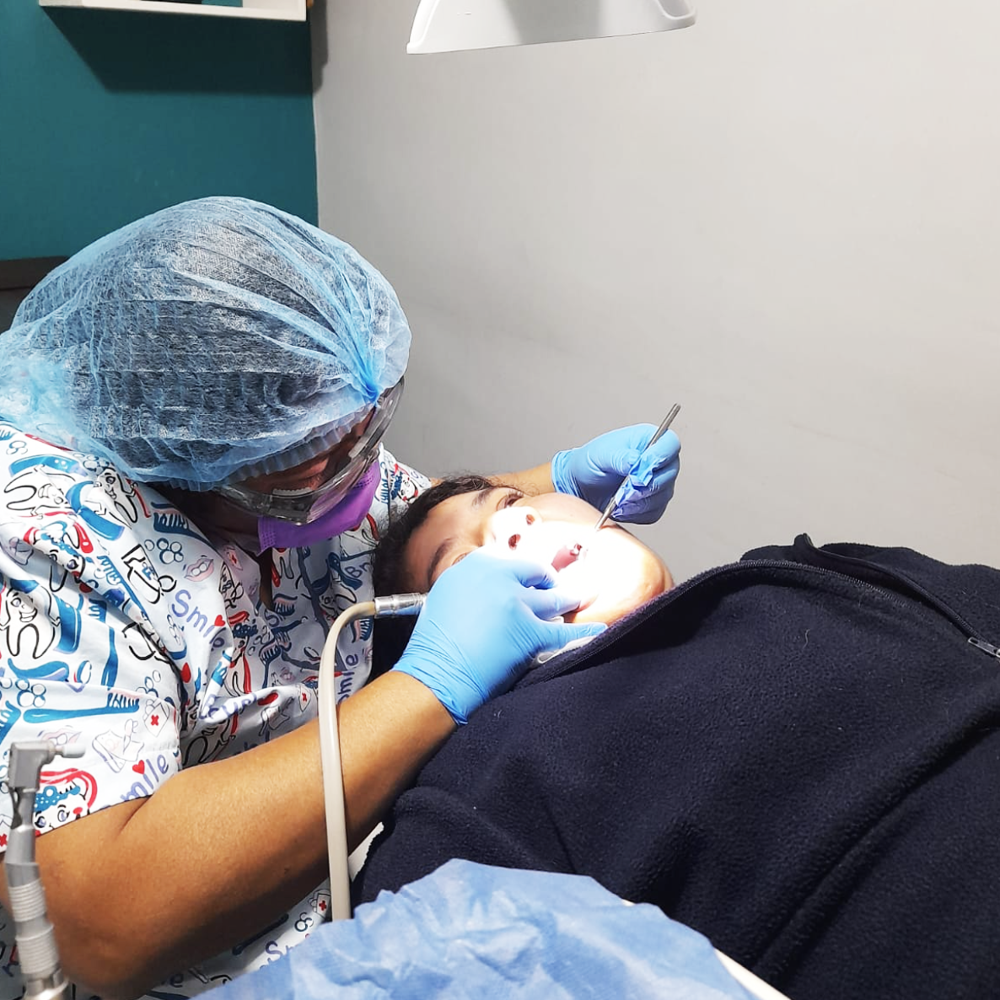
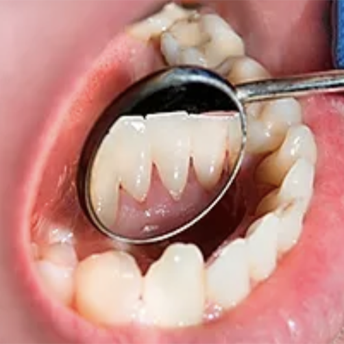
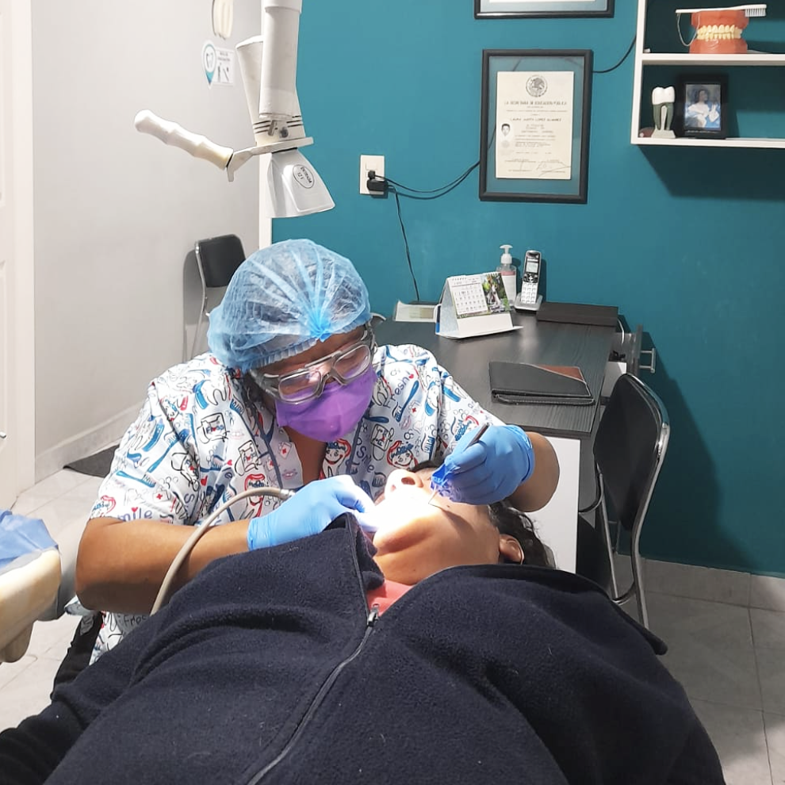

| Doctora haciendo una limpieza Dental | La limpieza dental se ocupa para eliminar la placa y el cálculo (sarro)
acumulado en los dientes por falta de
cepillado o por que existen zonas
difíciles donde se puede limpiar. |
| Imagen representativa sacada de Dental Medics | La limpieza dental se realiza con un
aparate que con vibraciones consigue
el desprendimiento de las placas de
sarro y manchas producidad por
tabaco, café etc. |
| Doctora haciendo una limpieza | La revisión cada 6 mesea ayuda a detectar problemas bucales antes de que se agraven o hacer una breve limpieza para una mejor higiene.
|
 Limpieza Dental
Limpieza Dental